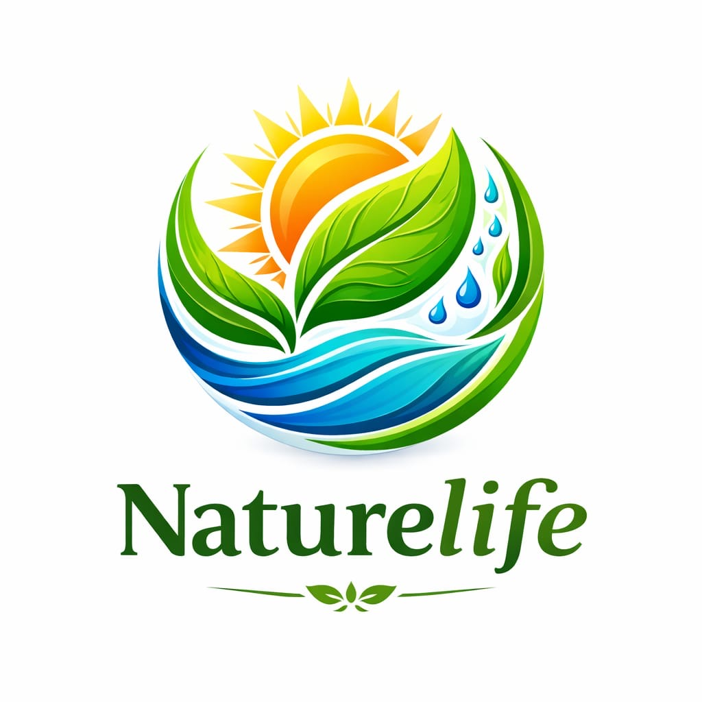

class="top">
🌿 Naturlife
Your Smart Agriculture Assistant
SMART FARMING • SRI LANKA
🌱 Select Any Crop
🔎
🌶️
මිරිස්
Chilli
ඉඟුරු
Ginger
🍅
තක්කාලි
Tomato
🍆
වම්බටු
Brinjal
🌱
Microgreens
Micro
➕
Add Any Crop
New crop
📍 Smart Farm Setup
Selected Crop
Variety
Planting / Nursery Date
Land Area
Farm Location
GPS
📍 Use my location
Create Smart Crop Plan
📊 My Farm Dashboard
Crop
—
Location
—
Next task
—
Expected harvest
—
📅 Seed → Harvest Timeline